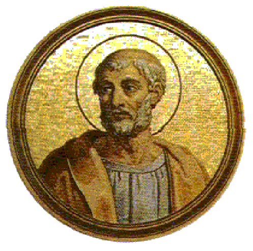

"SÃO CLEMENTE ROMANO"

SUMO PONTÍFICE CLEMENTE I - 4º PAPA DO CRISTIANISMO
“Ele viu os Apóstolos de JESUS, conversou com eles, ouviu a voz da pregação deles, foi instruído por eles e teve a tradição deles diante dos seus olhos”.
=ÍNDICE=
- PRECIOSO BALUARTE CRISTÃO
- IMPERADOR CRUEL
- FOTOS + CONVITE + E-MAIL